Kinetická teorie látek – tři základní poznatky
Celá teorie stojí na třech pilířích. Na nich je postavena veškerá další fyzika látek, kterou v tomto modulu probereme.
1. Částicová stavba
Látky v libovolném skupenství jsou složeny z částic.
2. Neuspořádaný pohyb
Částice látek jsou v neustálém neuspořádaném (chaotickém) pohybu, ve všech směrech.
3. Vzájemné síly
Částice na sebe navzájem působí silami, které jsou při malých vzdálenostech odpudivé a při větších vzdálenostech přitažlivé.
Látky jsou složeny z částic
Částice – atomy, molekuly, ionty, subatomární částice (protony, neutrony, elektrony).
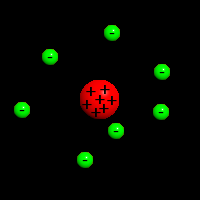
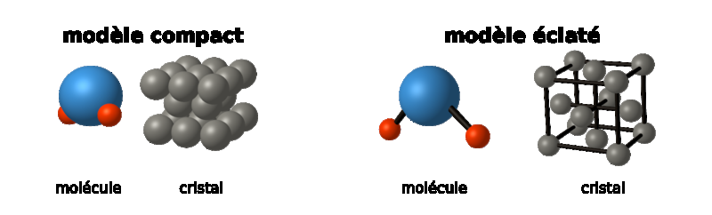
Struktura látek je nespojitá (diskrétní) – objem není vyplněn beze zbytku.
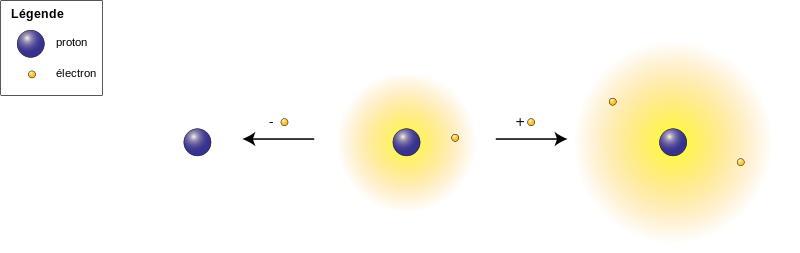
Částice nelze pozorovat pouhým okem, lupou ani optickým mikroskopem. Lze je zobrazit pouze pomocí řádkovacího tunelového mikroskopu (STM).
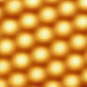
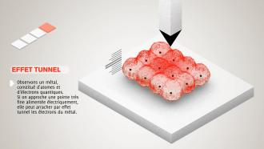
Rozměry atomů jsou přibližně 10⁻¹⁰ m v průměru.
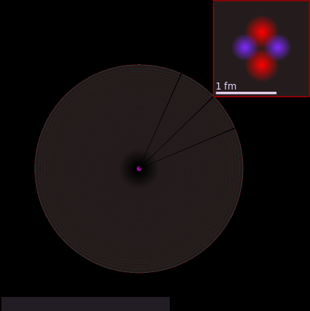
1 Å = 100 000 fm
Částice jsou v neustálém neuspořádaném pohybu
Brownův pohyb
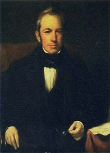
(nazvaný podle skotského botanika Roberta Browna, který jej objevil v roce 1827)
= mikroskopický pohyb nepatrných částic (pylová zrnka ve vodě, kapičky mléka rozptýlené ve vodě…), které opisují klikaté trajektorie, zatímco voda samotná se jeví jako nehybná.
Brownův pohyb se vysvětluje srážkami mezi nepatrnou částicí a molekulami dané látky (např. vody).
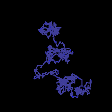
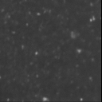
Difúze
= samovolné pronikání částic jedné látky mezi částice látky jiné, jsou-li tyto látky ve vzájemném kontaktu.
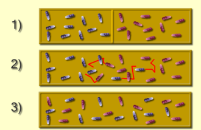
Difúze probíhá velmi rychle v plynech, pomaleji v kapalinách a velmi pomalu v pevných látkách.
Při vyšší teplotě probíhá difúze rychleji.
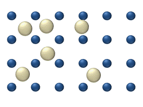
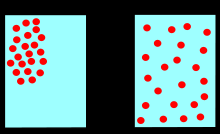
Tlak plynů
je důsledkem srážek molekul v tepelném pohybu se stěnami nádoby.
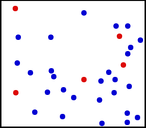
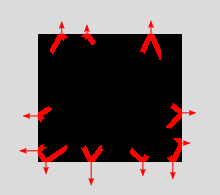
Částice na sebe působí silami
Vzájemné působení částic
Interakce mezi dvěma atomy je výsledkem přitažlivých a odpudivých sil mezi jejich jádry (elektricky kladnými) a elektronovými obaly (elektricky zápornými).
Výsledná síla může být přitažlivá nebo odpudivá – v závislosti na vzdálenosti mezi částicemi.
Přitažlivé síly mezi molekulami
- koheze – mezi částicemi jednoho tělesa
- adheze – mezi dvěma tělesy v kontaktu
- (mechanická) pevnost látek
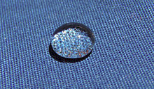
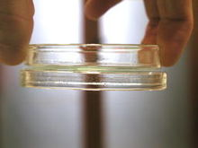
Odpudivé síly mezi molekulami
- velmi malá stlačitelnost kapalin a pevných látek
- změna směru pohybu při srážce dvou těles
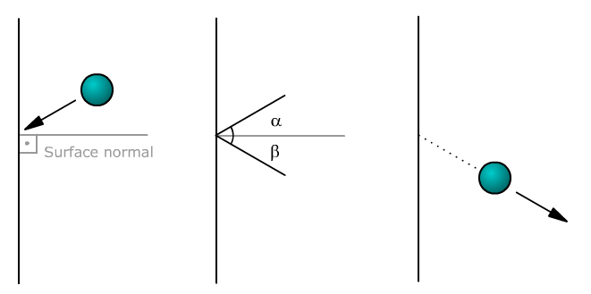
Závislost síly mezi dvěma částicemi na jejich vzdálenosti
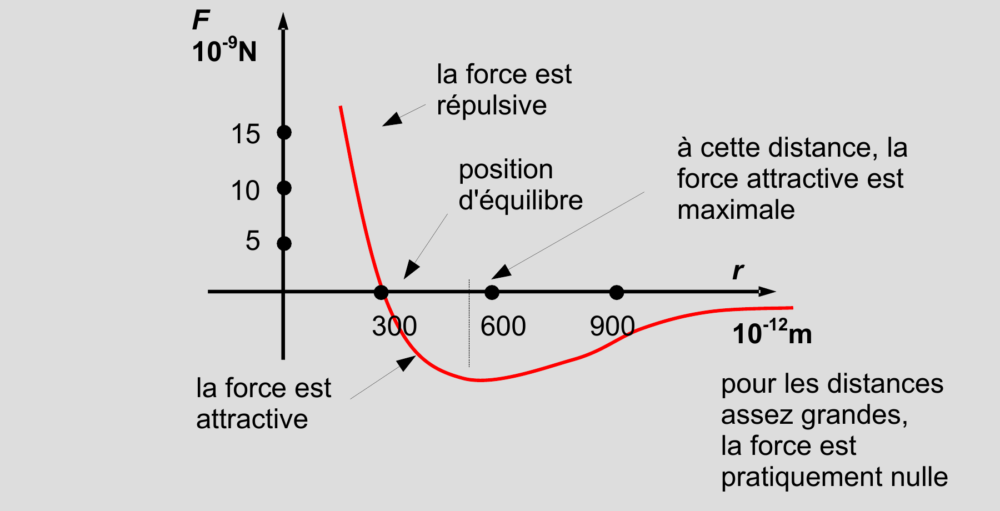
Síly mezi atomy v molekulách se nazývají vazebné síly a určují strukturu molekul.
Existence vzájemného působení mezi částicemi ukazuje, že soustava má potenciální energii.
Tato energie se nazývá vazebná energie a je rovna práci, kterou je třeba vykonat vnějšími silami k rozštěpení (přerušení) dané vazby.
Modely struktury látek
Plynná látka
- střední vzdálenosti mezi částicemi jsou mnohem větší než jejich rozměry ⇒ přitažlivé síly jsou zanedbatelné (kromě velmi krátkých srážek) ⇒ potenciální energie je malá
- neuspořádaný pohyb je velmi intenzivní ⇒ kinetická energie je velká
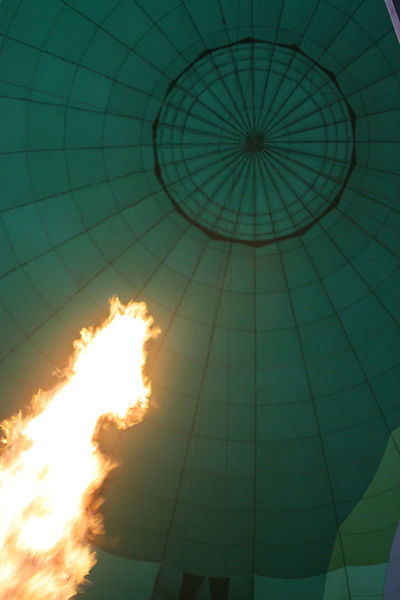
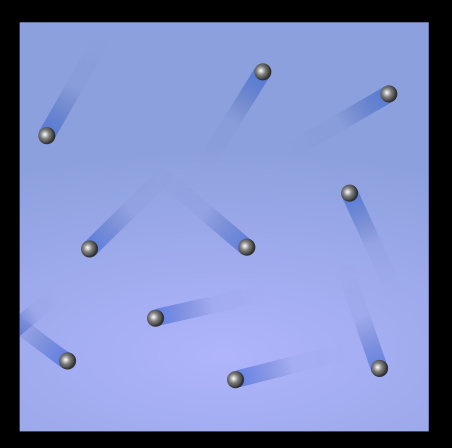
EP ≪ EK
Pevná látka
- vnitřní struktura je pravidelná (látky krystalické) nebo nepravidelná (látky amorfní)
- střední vzdálenosti částic jsou 0,2–0,3 nm
- částice jsou v látce vázány na pevná místa ⇒ síly mezi částicemi jsou velké ⇒ potenciální energie je velká
- pohyb částic je malý (kmitání kolem rovnovážných poloh) ⇒ kinetická energie je malá
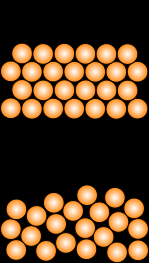
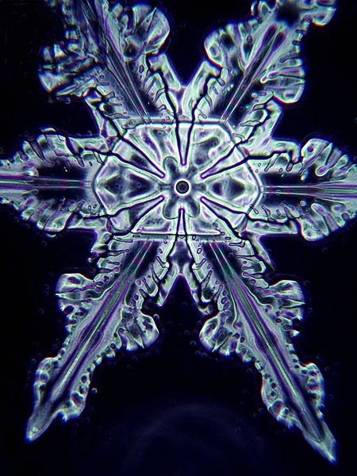
EP ≫ EK
Kapalná látka
- střední vzdálenosti mezi částicemi jsou přibližně 0,2 nm
- síly mezi částicemi jsou slabé ⇒ rovnovážné polohy se s časem mění
- potenciální energie je srovnatelná s celkovou kinetickou energií soustavy částic
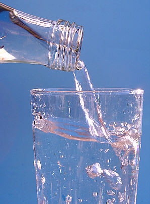
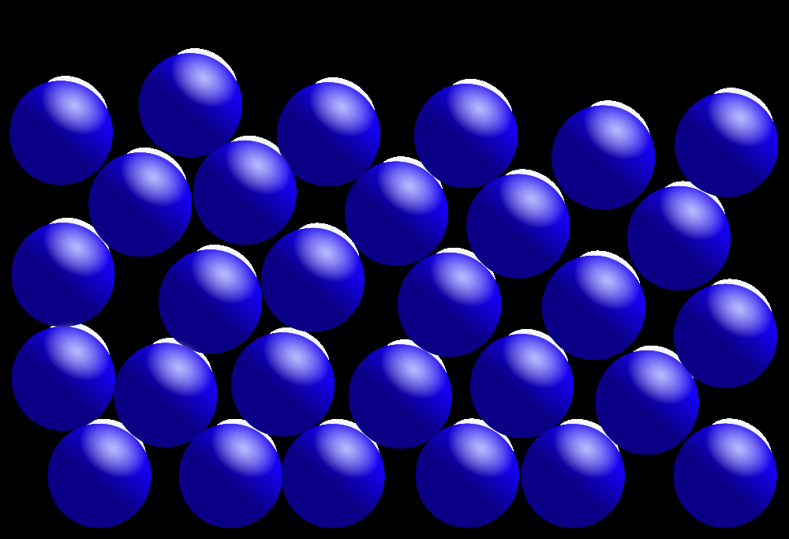
EP ≈ EK
Plazma
- „čtvrté skupenství látky“
- soustava elektricky nabitých částic (iontů, elektronů) a neutrálních částic
- např. plamen, blesk, elektrické výboje v plynech, plazma hvězd nebo mezihvězdného prostoru
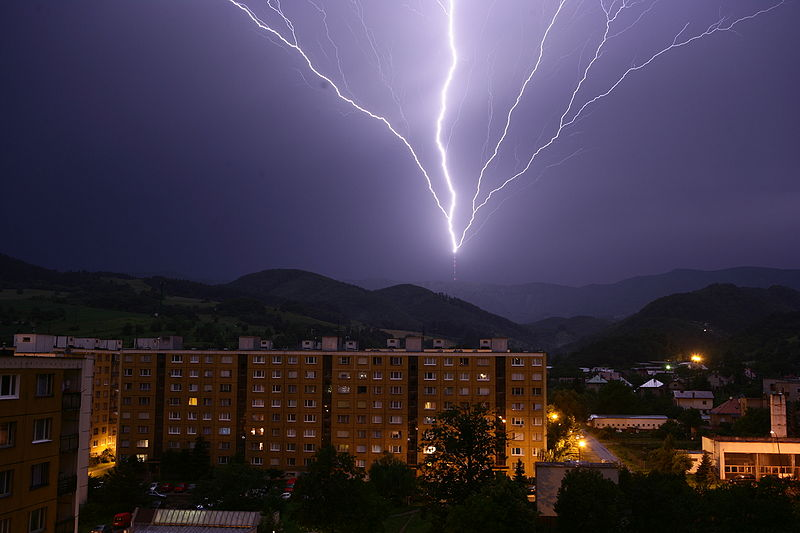
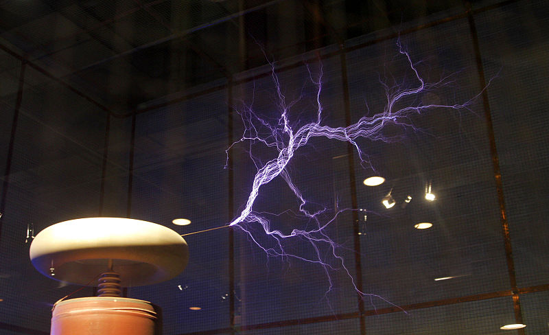
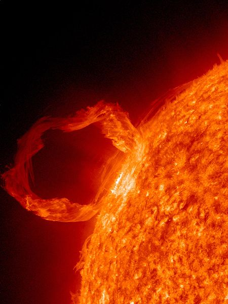
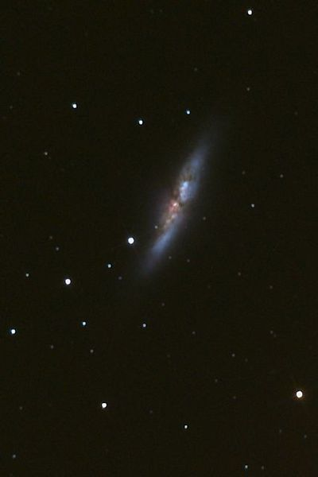
Rovnovážný stav soustavy
Termodynamická soustava
Soubor těles (objektů), jejichž stav zkoumáme.
Stavové veličiny
Fyzikální veličiny popisující stav soustavy (teplota, objem, tlak, hustota, počet molekul…).
Rovnovážný stav
Stav, který zůstává v čase neměnný.
Každá soustava, která se nachází v neměnných vnějších podmínkách, samovolně přechází do rovnovážného stavu.